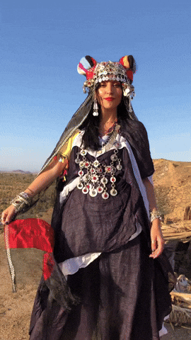

—The Folklure Magazine project was a university assignment aimed at introducing and preserving the richness of Amazigh culture. This publication features a variety of content including stories, poetry, artwork, music, and cuisine. The main objective was to offer an in-depth view of Amazigh heritage, amplify its voices, and foster cultural appreciation through engaging editorial design.
University Project
Integrated Print Media Design
— Cultural Magazine
Editorial Design
—I employed Adobe Photoshop and InDesign to create a visually engaging layout that harmonized with the cultural content. I focused on integrating traditional Amazigh elements with modern design techniques, ensuring that each issue was both informative and visually appealing. The magazine's design included carefully curated typography, imagery, and color schemes to reflect the richness of Amazigh heritage and provide a seamless reading experience.
The final publication successfully captured the essence of Amazigh culture, receiving praise for its ability to engage readers and educate them about this rich heritage. The project contributed to increased awareness and appreciation of Amazigh culture, and future iterations could benefit from interactive digital elements to enhance user engagement and expand the magazine’s reach.
—he project received positive feedback for its representation of Amazigh heritage and culture. It significantly increased cultural awareness among readers. Moving forward, incorporating interactive elements for a digital version could enhance user engagement and offer a more dynamic experience.
—— Magazine, here.